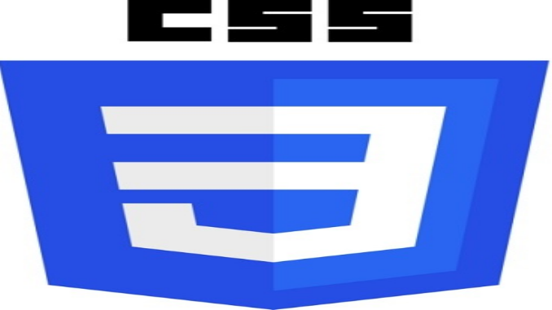
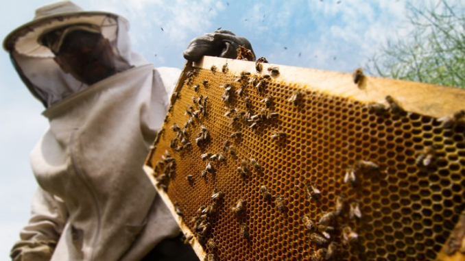
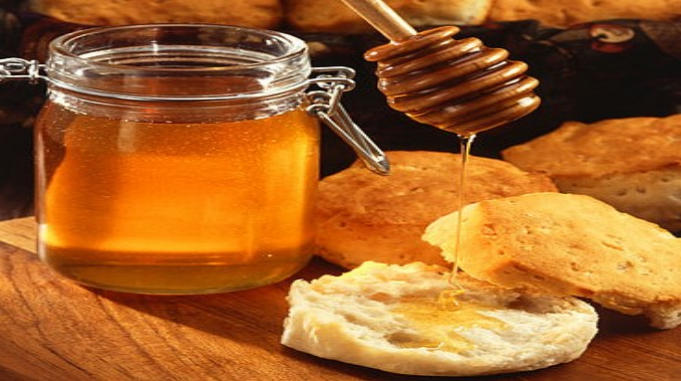

what did I like and what was new or hard
what did I like and what was new or hard
Technical Documentation what did I like and what was new or hard
Bee Keeping 101 This was a project for Free Code Camp. I enjoyed creating this page. I focused on the navigation bar and scrolling mostly on this project. I had a hard time debugging the responsive aspects of the page to load correctly in a mobile view of the page. However, after debugging it for some time it felt good to have the page resize on different devices and still have the same design wanted.
B5 raw Honey I created this page for a Free Code Camp project. This is one of my favorite pages I have created because I actual want to be a beekeeper in Chiloe Chile. I really enjoyed making the Logo and adding design with CSS. I would like to add to this page later to make it more functional like creating a shopping cart and checkout link. This will prepare me for my future hobby of beekeeping. I plan to use this web page as a functional page for myself in the future. View code here